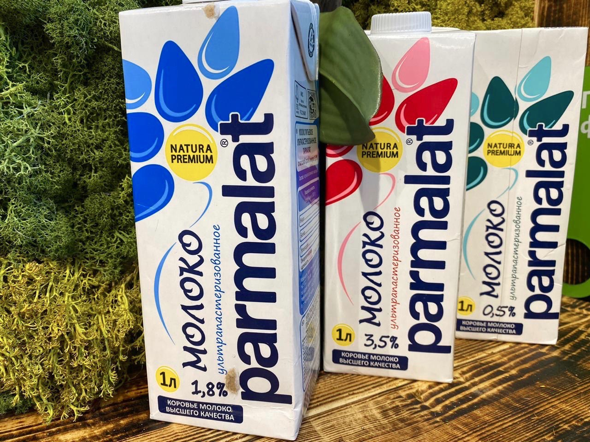

Parmalat SpA (произносится Пармала́т) — итальянская корпорация по производству молочных и других пищевых продуктов. Штаб-квартира компании находится в городке Коллеккьо (регион Эмилия-Романья).Компания основана в 1961 году, когда Калисто Танци (1938—2022), 22-летний выпускник колледжа, открыл в городе Парма небольшое предприятие по пастеризации молока. На данный момент насчитывается около 140 заводов по всему миру.У Parmalat имеются официальные представительства в таких странах как Австралия, Армения, Ботсвана, Венесуэла, Замбия, Италия, Канада, Колумбия, Куба, Мозамбик, Никарагуа, Парагвай, Португалия, Россия, Румыния, Свазиленд, Эквадор, Южная Африка. Лицензионное производство осуществляется в следующих государствах: Бразилия, Венгрия, Доминиканская республика, Испания, Китай, Мексика, США, Уругвай, Чили.
Качество продукции Parmalat

Молоко Parmalat ультрапастеризованное 1.8% 1 л - это традиционное ультрапастеризованное цельное молоко для ежедневного употребления в различных вариациях блюд и напитков. Передовые технологии ультрапастеризации молочной продукции, используемые компанией Parmalat, позволяют сохранить вкусовые и полезные свойства настоящего коровьего молока. Молоко Parmalat с жирностью 1,8% обладает достаточно насыщенным, приятным вкусом. Оно прекрасно подойдет как для детского питания, так и для взрослых ценителей молочных напитков и блюд на его основе. Такое молоко идеально для приготовления каши на завтрак, омлета, какао и молочных коктейлей, а также для добавления в кофе или в качестве самостоятельного напитка. Parmalat - это бренд, завоевавший любовь и доверие потребителе вкусом и высочайшим качеством своей продукции. Это крупнейшая итальянская компания, основанная в 1961 году в Парме, центре провинции Эмилия-Романья, которая является одной из ведущих игроков во всем мире в сфере производства и дистрибуции молока и молочных продуктов. Молоко и другие продукты Parmalat поставляются более чем в 17 стран и имеют постоянный высокий спрос среди покупателей. Натуральное коровье молоко поставляется с лучших ферм и не содержит в своем составе сухого молока и консервантов. Ультрапастеризованное молоко Parmalat обогащает организм множеством необходимых витаминов и минералов, которые способствуют правильному развитию и здоровому самочувствию. Удобная упаковка с откручивающейся крышкой отлично сохраняет свежесть и облегчает его многократное использование. Попробуйте молоко Parmalat, готовьте вкуснейшие блюда и заряжайтесь прекрасным настроением! Состав: изготовлено из нормализованного коровьего молока.